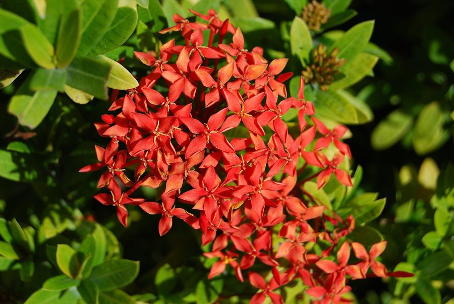

जंगल जेरेनियमJungle Geranium
Ixora coccinea · Rubiaceae · FLR-0345

- Scientific name वैज्ञानिक नाम
- Ixora coccinea L.
- Family कुल
- Rubiaceae
- Hindi हिंदी
- जंगल जेरेनियम
- Local names स्थानीय नाम
- jungle geranium, rukmini, rangan, ixora coccinea, flame of the woods
- Status here यहाँ की स्थिति
- cultivated
- Movement आवागमन
- Resident, here all year
- Known from कहाँ दर्ज
- Others have published records from the wider Awadh–Purvanchal plain, none yet from Basti–Ayodhya अवध–पूर्वांचल से दूसरों के प्रकाशित अभिलेख, बस्ती–अयोध्या से अभी नहीं
- IUCN IUCN
- not evaluated
- Review समीक्षा
- not yet reviewed
When to look कब देखें
Present all year. साल भर मौजूद।
Uses and possibilities उपयोग और संभावनाएँ
“Traditional medicine” means a documented traditional use, not a claim that it works. Nothing on this page is medical advice.
Drawn from the documented uses in the profile below, where each is labelled traditional, current or a research lead. All uses →
जंगल जेरेनियम / Jungle Geranium
Ixora coccinea L. — Rubiaceae
जंगल जेरेनियम — बागीचों, मंदिरों और आंगनों में खिलने वाली एक बेहद लोकप्रिय और सदाबहार झाड़ी। इसे भारत में 'रुक्मिणी' या 'रंगन' भी कहा जाता है। इसके सिरों पर चमकीले लाल और नारंगी रंग के नन्हे फूलों के बड़े-बड़े छतरी जैसे गुच्छे खिलते हैं, जो दूर से ही जलते हुए अंगारे जैसे दिखाई देते हैं। तितलियों और शकरखोरा पक्षियों को इसका मकरंद बहुत पसंद है।
Quick Identification त्वरित पहचान
| Feature | Description |
|---|---|
| Habit | Dense, multi-branched, compact evergreen woody shrub |
| Leaves | Opposite, sessile or sub-sessile, leathery, dark glossy green with interpetiolar stipules |
| Inflorescence | Dense, rounded, terminal corymbose cymes packed with dozens of bright scarlet florets |
| Corolla | Slender cylindrical tube opening into four spreading, acute, brilliant red petal lobes |
| Fruit | Small, fleshy, globose berry turning dark reddish-purple to black when mature |
Field tip: Look in village courtyards or temple borders for compact glossy shrubs displaying dense pom-poms of intense scarlet-red tubular flowers with protruding styles.
हिंदी — कैसे पहचानें: गहरे लाल फूलों के गोल गुच्छे, चमकीली हरी मोटी पत्तियां, और साल भर फूलों से लदी रहने वाली सदाबहार झाड़ी।
Morphology आकारिकी
Shrub description: Dense, rounded, glabrous evergreen shrub. Bark smooth, dark reddish-brown; branches spreading, terete, green when young. Leaves opposite, decussate, sessile or very shortly petiolate, oblong, elliptic or obovate, apex obtuse or shortly apiculate, base rounded or subcordate, firmly coriaceous, dark lustrous green above, pale green beneath; interpetiolar stipules triangular with a sharp subulate point. Inflorescence a terminal, dense, sessile or shortly pedunculate corymbiform cyme; bracts small, acute. Calyx tube ovoid, teeth four, persistent. Corolla brilliant scarlet, orange-red, or deep crimson; corolla tube very slender, elongate, cylindrical; limb divided into four spreading, ovate-lanceolate, acute lobes. Fruit a globose two-seeded fleshy berry, ripening dark purplish-black.
हिंदी: यह एक सदाबहार सुंदर झाड़ी है।
Behaviour & Ecology व्यवहार और पारिस्थितिकी
- Continuous Blooming: Blooms virtually year-round in northern Indian conditions, peaking in brilliance during and after the monsoon rains.
- Sunbird and Butterfly Magnet: The slender corolla tube holds rich nectar accessible primarily to purple sunbirds (Cinnyris asiaticus) and large papilionid butterflies.
- Evergreen Foil: Maintains dense, lustrous green foliage even during scorching summer heat if provided minimal soil moisture.
- Pollination Mechanism: Protruding two-branched stigma matures after anthers dehisce, promoting cross-pollination by flower-probing insects.
हिंदी: यह लगभग पूरे साल फूलों से लदी रहती है। इसके फूलों की गहरी नली से शकरखोरा चिड़िया और बड़ी तितलियां रस चूसती हैं।
Life Cycle / Phenology जीवन चक्र
- Floral Waves: Repeated flushes of terminal flower heads emerge continuously, with heaviest flowering from July to November.
- Fruit Setting: Berry clusters form behind spent flower heads, swelling into glossy green balls by late autumn.
- Ripening: Berries turn dark purple in winter, providing food for urban and garden birds.
- Propagation: Easily propagated through semi-hardwood stem cuttings in moist monsoon sand.
हिंदी: बरसात में इस पर सबसे ज्यादा फूल आते हैं। सर्दियों में इसके काले-जामुनी फल पकते हैं जिन्हें पक्षी खाते हैं।
Associated Species / Interactions संबंधित प्रजातियाँ
- Nectar Seekers: Crucial energy station for crimson rose (Pachliopta hector), common Mormon (Papilio polytes), and purple sunbirds.
- Bird Frugivores: Ripe berries eaten by red-vented bulbuls and Asian koels in garden environments, frequently planted beneath mango trees.
- Ant Mutualisms: Ants regularly visit the sweet secretions at the bases of flower heads.
हिंदी: मॉर्मन और रोज तितलियां तथा शकरखोरा पक्षी इसका मकरंद पीने आते हैं। बुलबुल इसके पके फल खाती है।
Pests and Diseases कीट और रोग
- Scale Insects: Soft brown scale (Coccus hesperidum) frequently infests woody stems and leaf undersides, attended by ants.
- Sooty Mould: Black fungal film develops over honeydew excreted by sap-sucking scales on leaves.
- Iron Chlorosis: Leaves turn yellowish-white with green veins in highly alkaline or sodic soils.
हिंदी: तनों पर कभी-कभी चिपचिपे कीड़े लग जाते हैं और क्षारीय मिट्टी में पत्तियां पीली पड़ने लगती हैं।
Agricultural / Human Relevance कृषि प्रासंगिकता
- Ornamental Landscaping: One of the most cherished flowering hedge and specimen shrubs across Indian gardens and parks.
- Religious Ceremonies: Bright scarlet flowers are traditionally offered in temples and religious ceremonies across Uttar Pradesh.
- Ayurvedic Medicine: Roots, flowers, and leaves are valued in traditional medicine for dysentery, skin eruptions, and menstrual regulation.
हिंदी: इसे बागीचों में सुंदरता और मंदिरों में पूजा के लिए लगाया जाता है। पारंपरिक चिकित्सा में इसकी जड़ों का उपयोग पेचिश और त्वचा रोगों में होता है।
Expected Locally स्थानीय रूप से अपेक्षित
Not a field record. Written from published accounts for eastern Uttar Pradesh. No confirmed local sighting yet — if you have seen it, that is what the atlas needs.
अभी तक स्थानीय पुष्टि नहीं। यह विवरण प्रकाशित स्रोतों से है, किसी अवलोकन से नहीं।
Expected in scrubby wastelands, village hedgerows, and garden borders across Basti, Ayodhya, and neighbouring Awadh districts. GBIF holds published records from the wider Awadh–Purvanchal plain, none yet from Basti–Ayodhya. To confirm this species for the Atlas, provide a clear photograph showing flowers, leaves, and habit, along with date, time, and specific location.
Distribution वितरण
Global range: Native to India, Sri Lanka, and Bangladesh, now cultivated globally as a premier ornamental across the humid tropics.
In India: Native along the Western Ghats and peninsular tracts; cultivated in gardens throughout every Indian state and territory.
In Uttar Pradesh: Widely planted across public and private gardens in Lucknow, Ayodhya, Varanasi, and Gorakhpur.
In Basti district / eastern UP: Expected in homestead compounds, primary schools, ashrams, and nursery gardens across Basti and Ayodhya.
हिंदी: यह पौधा भारत और श्रीलंका का मूल निवासी है और अब पूरे देश के बागीचों में सजावट के लिए लगाया जाता है।
Research Questions शोध प्रश्न
- Which butterfly species transfers the highest volume of pollen between Ixora coccinea flower clusters? / तितली की कौन सी प्रजाति इस पौधे के फूलों में सबसे अधिक पराग स्थानांतरित करती है?
- How does soil pH correction with organic mulch alleviate leaf chlorosis in alkaline Awadh soils? / अवध की क्षारीय मिट्टी में पत्तियों का पीलापन रोकने के लिए जैविक खाद कितनी प्रभावी है?
- What is the diurnal nectar production curve across seasonal temperature extremes? / सर्दियों और गर्मियों में दिन के समय इसके फूलों में मकरंद बनने की गति कैसी रहती है?
- Does hedge density provide significant microclimatic cooling around rural dwellings? / क्या मकानों के चारों ओर इसकी घनी बाड़ लगाने से गर्मियों में तापमान कम होता है?
- How do purple sunbirds adapt their foraging posture to access the deep corolla tube? / शकरखोरा पक्षी इसके गहरे फूलों से रस पीने के लिए किस तरह बैठते हैं?
Similar Species मिलती-जुलती प्रजातियाँ
| Species | How to tell apart | हिंदी |
|---|---|---|
| Ixora pavetta | Small tree; flowers white or pale cream, sweet-scented; woodland native | छोटा पेड़, सफेद सुगंधित फूल |
| Ixora finlaysoniana | Flowers pure white in very large dense heads; cultivated ornamental | बड़े गुच्छों में पूरी तरह सफेद फूल |
| Hamamelia patens | Firebush with orange-red tubular flowers; leaves whorled in groups of three | तीन-तीन पत्तों के चक्र वाली झाड़ी, नारंगी फूल |
Field rule: A compact evergreen shrub with leathery opposite leaves and dense terminal pom-poms of intense scarlet-red four-lobed tubular flowers identifies Ixora coccinea.
Taxonomy & Classification वर्गीकरण
Original description. Described by Carl Linnaeus in 1753 as Ixora coccinea in Species Plantarum, vol. 1, p. 110.
Subspecies. Monotypic; numerous horticultural cultivars with yellow, pink, and orange flowers exist in cultivation.
Family and order placement. Belongs to the family Rubiaceae (coffee and madder family), subfamily Ixoroideae, in the order Gentianales.
IUCN status rationale. Not evaluated by the IUCN; ubiquitous in global tropical cultivation and ecologically secure.
हिंदी: कार्ल लिनिअस ने 1753 में इसका वैज्ञानिक विवरण दिया था। यह रूबिएसी कुल का पौधा है।
Photo Gallery फोटो गैलरी
No photos yet — add field photos to media/species/jungle_geranium/ and run node scripts/sync_photos.js.
Photos needed आवश्यक फोटो
- [ ] Brilliant scarlet flower head in full bloom with protruding styles (चमकीले लाल फूलों का खिला हुआ गुच्छा)
- [ ] Leathery glossy green opposite leaves showing interpetiolar stipule (चमकीली हरी पत्तियों और डंठल का जोड़)
- [ ] Cluster of dark purplish-black ripe berries (काले-जामुनी पके फलों का गुच्छा)
References संदर्भ
- Linnaeus, C. (1753). Species Plantarum, vol. 1, p. 110. Holmiae.
- Duthie, J.F. (1903). Flora of the Upper Gangetic Plain and of the Adjacent Siwalik and Sub-Himalayan Tracts, vol. 1, p. 421. Government of India, Calcutta.
- Hooker, J.D. (1880). The Flora of British India, vol. 3, p. 145. L. Reeve & Co., London.
- Brandis, D. (1906). Indian Trees: An Account of Trees, Shrubs, Woody Climbers, Bamboos and Palms, p. 388. Archibald Constable & Co., London.
- Kirtikar, K.R. & Basu, B.D. (1935). Indian Medicinal Plants, vol. 2, p. 1281. Lalit Mohan Basu, Allahabad.
- GBIF Occurrence Data — Ixora coccinea L., India (2025).
Source file: species/flora/shrubs/jungle_geranium.md